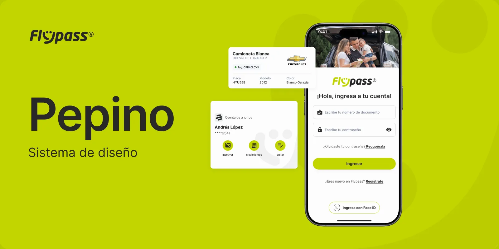
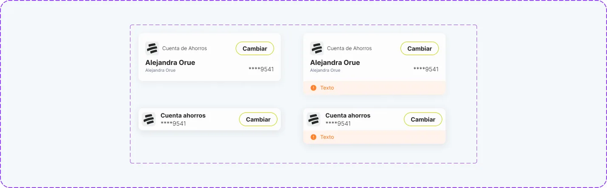

Pepino, Flypass's design system, now AI agents understand it too
When the team started building screens with Claude Code and Cursor, the design system became the source of truth for machines too. My job: make sure what we design in Figma reaches generated code without losing style, behavior or accessibility.


The problem
Pepino already existed as a web-component library (pp-*) with Angular, React and Vue wrappers, but it had three frictions:
- Figma and code drifted apart. Same component, different names, states or tokens.
- AI made up UI. An agent without context generates "similar" buttons with loose hex colors, not real components.
- The DS was a bottleneck. Every new screen depended on someone knowing the library by heart.
What I did
1. Components connected between Figma and engineering
Together with engineering we rebuilt components with AI support, reviewing accessibility, states and visual fidelity against Figma. Each finished component is connected across three layers: Figma ↔ repository ↔ agent spec.

pp-card__change-payment with size and alert variants, documented the same way in Figma and code.2. Design decisions documented in a contract: DESIGN.md
I designed the structure of a DESIGN.md with no duplicated work: live tokens are read from code, and the document covers what code can't infer, such as usage rules, composition patterns and anti-patterns.
# DESIGN.md (illustrative excerpt) tokens: live source → DS package (not copied here) pattern: network error use: pp-alert + "Retry" action type: semantic title S token, body M never: blocking modal for recoverable errors
3. An MCP server so agents find the right thing
With the engineering team, the DS was exposed through MCP. An agent can ask which component to use, its spec, the snippet for its framework, the exact token for a Figma color, or the mapping from a Figma name to its component pp-*.
Because the MCP reads the installed DS version, updating the library is enough for agents to see new components. There are no two sources of truth to maintain.
That way, Pepino's decisions reach other people's workflows whatever AI tool they use: Claude, Lovable or Figma Make.
4. pp-ui: on-brand prototypes in minutes
I created a skill called pp-ui, which generates demos and prototypes with Pepino's tokens and governance. Product and business validate ideas with realistic UI before asking for high-fidelity design.
Outcomes
Also, the first big feature designed on this model was in-app EV charging.
What I learned
An AI-first design system isn't "documenting more". It's deciding what lives in code, what lives in the document and what the agent needs to understand. The best quality signal is generated code that doesn't need a designer to fix it.